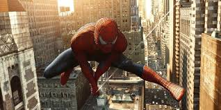
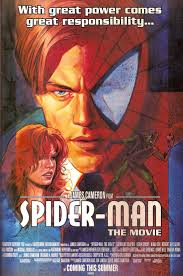

Chapters
- The Origin of Spider-Man
- First Encounter with the Green Goblin
- Battle with Doctor Octopus
- Daily Bugle Drama
- Secrets of Mary Jane
- The Venom Threat
- The Sinister Six Assemble
- Loss and Responsibility
- Spider-Man’s Legacy
Main Characters
- Peter Parker / Spider-Man
- Mary Jane Watson
- Uncle Ben
- Aunt May
- Harry Osborn
Book Summary
Spider-Man is one of the most iconic superheroes in comic history. Created by Stan Lee and Steve Ditko in 1962, his story resonates with readers of all ages.
After being bitten by a radioactive spider, Peter Parker gains extraordinary abilities, but also faces the weight of responsibility.
Spider-Man's struggles often reflect real-life issues like grief, balancing work and school, and finding identity.
Throughout the comics, he learns that power must be used wisely—a theme that continues in modern adaptations.
Mary Jane Watson, his love interest, adds emotional depth to his story while Aunt May provides wisdom and support.
The city of New York acts almost like a character itself, bustling with life, crime, and opportunity for heroism.
 